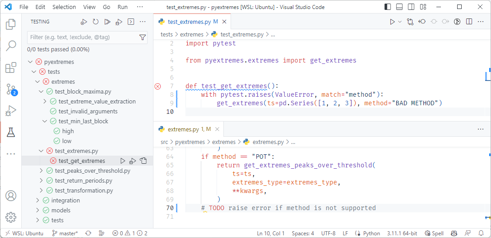

Testing, linting and formatting
Testing
Verify code is working as expected.
Simplest way to test is to run code and check output.
Automated testing checks output automatically.
Code changes can break other parts of code.
Automatic testing verifies code is still working.
Testing workflow
- Prepare inputs
- Describe expected output
- Obtain actual output
- Compare actual and expected output
Unit testing
Definition “Unit”
- A small, fundamental piece of code.
- Executed in isolation with appropriate inputs.
- A function is typically considered a “unit”
- Lines of code within functions are smaller (can’t be isolated)
- Classes are considered bigger (but can be treated as units)
A good unit test
- Fully automated
- Has full control over all the pieces running (“fake” external dependencies)
- Can be run in any order
- Runs in memory (no DB or file access, for example)
- Consistently returns the same result (no random numbers)
- Runs fast
- Tests a single logical concept in the system
- Readable
- Maintainable
- Trustworthy

Example
- find the maximum water level each year
- create a summary report for the subset of data
- find the maximum water level each year
- create a summary report for the subset of data
Integration testing
Testing in VS Code
Fixtures
- A piece of code that is used by multiple tests
- Provide data or services to tests
- Defined with @pytest.fixture
- Set up test environment
- Pass fixtures as test arguments
Fixture example
Test coverage
- A measure of how much of your code is tested
- Aim for high coverage, but focus on meaningful tests
- Install
pytest-cov - Run tests with coverage report
pytest --cov=myproj
- Use coverage report to identify untested code
Test coverage report
Testing advice
Test edge cases
- empty lists
- lists with a single element
- empty strings
- empty dictionaries
- None
- np.nan
Tests document expected behavior
def test_operable_period_can_be_missing():
assert is_operable(height=1.0, period=None)
assert is_operable(height=1.0, period=np.nan)
assert is_operable(height=1.0)
assert not is_operable(height=11.0)
def test_height_can_not_be_missing():
with pytest.raises(ValueError) as excinfo:
is_operable(height=None)
is_operable(height=np.nan)
assert "height" in str(excinfo.value)Test driven development
- Write a test that fails ❌
- Write the code to make the test pass ✅
- Refactor the code ⚒️
The benefit of this approach is that you are forced to think about the expected behaviour of your code before you write it.
It is also too easy to write a test that passes without actually testing the code.
and now for something completely different…
The Zen of Python
Beautiful is better than ugly.
Explicit is better than implicit.
Simple is better than complex.
Complex is better than complicated.
Flat is better than nested.
Sparse is better than dense.
Readability counts.
…
Errors should never pass silently.
Unless explicitly silenced.
…
Exceptions
- Exceptions are a way to handle errors in your code.
- Raising an exception can prevent propagating bad values.
- Exceptions are communication between the programmer and the user.
- There are many built-in exceptions in Python
IndexErrorKeyErrorValueErrorFileNotFoundError
- You can also create your own custom exceptions, e.g.
ModelInitError,MissingLicenseError?
Example
src/ops.py
It is better to raise an exception (that can terminate the program), than to propagate a bad value.
Warnings
Warnings are a way to alert users of your code to potential issues or usage errors without actually halting the program’s execution.
How to test exceptions
tests/test_ops.py
The same can be done with warnings.
Linting
A quick way to check your code for common errors and style issues.
ruff is a recent tool for linting Python code.
- syntax errors
- unused imports
- unused variables
- undefined names
- code style (e.g. line length, indentation, whitespace, etc.)
Linting with ruff
examples/04_testing/process.py
Run ruff check:
$ ruff check process.py
process.py:1:8: F401 [*] `requests` imported but unused
process.py:6:12: F821 Undefined name `np`
process.py:7:5: F841 [*] Local variable `method` is assigned to but never used
Found 3 errors.
[*] 1 fixable with the `--fix` option (1 hidden fix can be enabled with the `--unsafe-fixes` option).Formatting
- Formatting code for readability and maintainability is essential.
ruffcan be used for code formatting (in addition to linting).ruffis a faster replacement ofblack, a previously commonly used code formatter.- It enforces its own rules for formatting, with limited configurability.
- Having a unified style makes code changes easier to understand and collaborate on.
Running ruff format
Check if files need formatting (optional):
$ ruff format --check
Would reformat: data_utils.py
Would reformat: dfsu/__init__.py
Would reformat: dataarray.py
Would reformat: dataset.py
Would reformat: spatial/geometry.py
Would reformat: pfs/pfssection.py
6 files would be reformattedFormat files:
Ruff format in Visual Studio Code
Visual Studio Code can be configured to run ruff format automatically when saving a file using the Ruff extension.
Profiling
- Profiling is a way to measure the performance of your code.
- It can help you identify bottlenecks in your code.
- Your intuition about what is slow is often wrong.
- The
line_profilerpackage reports the time spent on each line of code. - It can be run inside a notebook using the
lprunmagic command.
Profiling - example code
import numpy as np
def top_neighbors(points, radius=0.1):
"""Don't use this function, it's only purpose is to be profiled."""
n = len(points)
idx = np.array([int(x) for x in str.split("0 "* n)])
for i in range(n):
for j in range(n):
if i != j:
d = np.sqrt(np.sum((points[i] - points[j])**2))
if d < float(radius):
idx[i] += 1
for i in range(n):
for j in range(n - i - 1):
if idx[j] < idx[j + 1]:
idx[j], idx[j + 1] = idx[j + 1], idx[j]
points[j], points[j + 1] = points[j + 1], points[j]
return points
def main():
points = np.random.rand(1000, 2)
top = top_neighbors(points)Profiling - output
Invoking the jupyter magic command lprun with:
- function to profile -
top_neighbors - code to run -
main()
Line # Hits Time Per Hit % Time Line Contents
==============================================================
3 def top_neighbors(points, radius="0.1"):
4 """Don't use this function, it's only purpose is to be profiled."""
5 1 2800.0 2800.0 0.0 n = len(points)
6 1 353300.0 353300.0 0.0 idx = np.array([int(x) for x in str.split("0 "* n)])
7
8 1001 345100.0 344.8 0.0 for i in range(n):
9 1001000 378191701.0 377.8 2.2 for j in range(n):
10 1000000 328387205.0 328.4 1.9 if i != j:
11 999000 1e+10 14473.0 83.8 d = np.sqrt(np.sum((points[i] - points[j])**2))
12 999000 933778605.0 934.7 5.4 if d < float(radius):
13 28952 57010001.0 1969.1 0.3 idx[i] += 1
14 1001 367100.0 366.7 0.0 for i in range(n):
15 500500 144295203.0 288.3 0.8 for j in range(n - i - 1):
16 499500 302166901.0 604.9 1.8 if idx[j] < idx[j + 1]:
17 240227 212070500.0 882.8 1.2 idx[j], idx[j + 1] = idx[j + 1], idx[j]
18 240227 437538803.0 1821.4 2.5 points[j], points[j + 1] = points[j + 1], points[j]
19 1 500.0 500.0 0.0 return pointsMakefiles
- Makefiles simplify running complex commands.
- They act as a single source of truth for how to run your tools.
- Self documenting, making it easier to onboard new team members.
- Run ‘make <command>’ to run a command from the Makefile.
- On Linux by default, for Windows install with MSYS2 or Chocolatey (or use WSL).
Summary
- Testing is a way to verify that your code is working as expected.
- Unit tests are small, isolated tests that verify a single logical concept in your code.
- Integration tests are used to verify that your code works with other code.
- Exceptions are a way to handle errors in your code.
- Warnings are a way to alert users of your code to potential issues or usage errors.
- Linting is a way to check your code for common errors and style issues.
- Ruff is a fast linter that checks for common errors and style issues.
- Ruff is also an automatic code formatter that enforces a consistent style.
- Profiling is a way to measure the performance of your code.
- Makefiles simplify project related commands for everyone.
Python package development